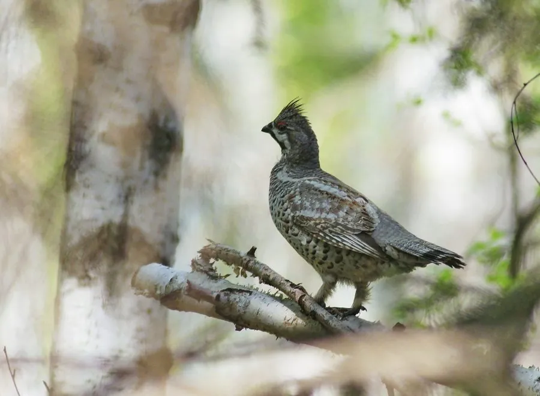

鸟类 · 动物界
花尾榛鸡 Tetrastes bonasia

欧亚针叶林中的小型松鸡，羽色灰褐带细密横斑、喉部黑色镶白边，冬季在雪下掘洞过夜，曾因肉质鲜美被大量猎捕。
- 分类
- 门脊索动物门纲鸟纲目鸡形目科雉科属榛鸡属
- 栖息环境
- 北方针叶林与针阔混交林，尤喜云杉林下带榛木与浆果灌木的坡地
- 地理分布
- 欧洲北部、西伯利亚至中国东北与新疆北部、朝鲜半岛、日本北海道
- 保护级别
- IUCN 无危（LC）；中国国家二级保护动物
物种志
花尾榛鸡体长 35–40 厘米，体重 300–450 克，雌雄羽色相近。通体灰褐至棕灰，密布黑褐与白色的细横斑，形成极好的树皮伪装；喉部黑色，边缘镶一圈白羽，是重要识别特征；头顶有短冠羽，眼上有一道浅色眉纹。尾羽较长，末端有黑色横带。腿被羽至趾，冬季趾侧长出栉状鳞片，便于在雪面行走。
它们栖息于欧亚大陆北部的针叶林与针阔混交林，偏爱有云杉、冷杉和榛树的下层植被，多成对或家族群活动，性隐蔽，受惊时先静伏再突然起飞。食性随季节变化：夏秋取食浆果、种子、嫩叶和昆虫，冬季主食桦树、赤杨的芽苞与柔荑花序。繁殖期 4–6 月，在地面倒木旁筑巢，每窝 6–10 枚卵，雌鸟孵卵约 25 天。冬季会钻进雪洞中过夜保温。因肉质细嫩曾被称为“飞龙”，遭大量猎捕，现为中国二级保护动物。
形态与习性
- 体长约 35–40 cm，体重 300–450 g
- 食性浆果、种子、嫩叶、昆虫；冬季主食桦树与赤杨芽苞
- 繁殖4–6 月地面筑巢，每窝 6–10 枚卵，孵卵约 25 天
- 识别特征喉部黑色并镶白边，通体灰褐带细密横斑
- 越冬方式冬季钻进雪洞过夜，可保温数摄氏度
- 趾部适应冬季趾侧长出栉状鳞片，便于在雪面行走
- 寿命野外约 5–8 年
趣味知识
- 花尾榛鸡会钻进松软的雪层里过夜，雪洞比外面的气温高好几度。
- 它喉部那块黑色羽毛镶着一圈白边，是野外辨认的关键。
- 因为肉味鲜美，它在东北曾被称为“飞龙”，长期遭猎捕。